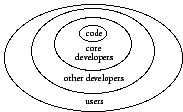
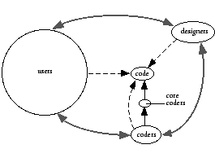
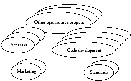
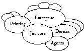
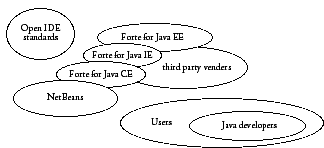
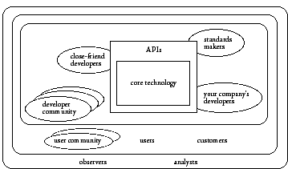

|
Previous Table of Contents Up Next Open Source and CommunityA successful open-source project is a community effort by people with different needs and skills and includes users, designers, programmers, testers, and others. The word community encompasses many meanings and is used by different people to mean many different things. For understanding open source, we find the following definition from Community Building on the Web by Amy Jo Kim most useful: A community is a group of people with a shared interest, purpose, or goal, who get to know each other better over time. (p. 28) Both aspects are equally important: Conversations around their shared interest in the open-source project cause the participants to learn about each other. A scattered collection of people just using a piece of software is not a community, but can become one by talking with each other to understand how to best use the software. We particularly want to distinguish a true community from a user group, where people come mainly to learn about a product or technology but do not interact much with each other--typically the users listen to and ask questions of one or more experts. If you ask people connected with open source about their community and how it works, many will draw something like Figure 3.1. They will tell you about how people start as just users and how some will become more involved by reporting bugs. Some may become developers who fix bugs or make minor enhancements. A few developers then get more involved and join the ranks of the core developers, being granted the right to check-in changes to the actual project's source code. This is a very code-centric view of the open-source process as a hierarchy that has users at the periphery, occasional developers closer in, core developers even closer in, and the code at the center.

FIGURE 3.1. Single community built around source code.And, in fact, this view makes the hierarchy into a funnel in which the goal is to convert people from one ring in the diagram to people in the next one in--almost as if the goal were to turn people into code in the end, the highest form of existence. A direct result of this perspective is that the actual users of the program are marginalized. Although the success of the project is often measured by the number of people that use the computer program being developed, only those people who are willing and able to talk about the code can participate in discussions on the project's mailing lists. Major decisions are made by those writing the code, not by those who will only use it. If we step back a bit, we can see that the people involved in an open-source project take on various roles. Over time they may act as users, designers, or coders. So a better diagram looks like Figure 3.2. Here the code is still at the center; users, designers, and coders can look at the code, but only the core coders deal directly with the code. We use the term coder rather than developer to emphasize the roles being played: A coder is someone who manipulates code, either by writing new code to implement some design feature or by inspecting and correcting existing code someone else has written. The thin solid black lines in Figure 3.2 indicate changes to the source code, the dotted lines indicate viewing the source code and interacting with the program, and the thicker, black lines indicate communications between people in the different roles. Note that the ovals representing the different roles are not drawn to scale; the users' circle should be much, much bigger for any healthy open-source project.

FIGURE 3.2. Different roles, still focused on code.This is still a view that focuses on the source code, but it brings out that design is separate from coding and that designers need not be coders. It also reflects the fact that people in the community may not simply advance from user to core developer in a linear progression but adopt the roles that make sense for what they are doing at the moment. If we step back still further and look at all the ways that people interact in the context of an open-source project, we see they do so in many different ways, such as:
Many of these do not involve the source code at all: Users can discuss how best to do their jobs, perhaps only just touching on how the project's tools can help them. Other conversations may focus on standards for protocols or application programming interfaces (APIs) that the project uses. Still other conversations may address issues affecting the larger open-source community. Each different conversation involves a different group of people. These groups may range in size from small working groups of fewer than 20 members to full communities of hundreds or thousands of participating individuals. We might represent these multiple communities as in Figure 3.3. Some people will participate in different discussions, making them members of several communities. This overlap helps to create the larger community associated with the open-source project as a whole.

FIGURE 3.3. Communities built around common interests.Each of these communities has its own special interests; for example, some communities connected to Linux might include system administrators concerned with installing and configuring the Linux operating system on various types of computers. Another group of people might be concerned with business productivity tools (such as word processors, spreadsheets, and presentation tools) that are available for Linux--their focus is on what tools exist and how to use them. A third community might form around computer games available for Linux, with a subcommunity around a specific game such as Quake--this group would focus on exchanging tips, rumors of new games, and finding opponents to play with. Each community will flourish or wither depending on how well its interests are met by the community resources. For example a community of newbies asking basic questions about how to use a piece of software will succeed only if more experienced users who can answer those questions are also part of the community. In the course of a successful open-source project, different communities will come and go. New ones will spring up, grow, and possibly become dormant or die. As long as there are always some thriving communities, the larger open-source project can be considered alive and well. Note that death of a community does not equal failure. Consider a community that arises to develop a new standard. After the standard it developed has been accepted by the larger Internet community, the community has achieved its purpose and is no longer necessary. If future revisions to the standard are called for, the community might be resurrected. Examples of Multiple CommunitiesTo make this more concrete, let's look in depth at some of the different communities within two Sun-sponsored projects, Jini and NetBeans. JiniJini technology is a simple distributed computing model based on the Java programming language developed by Sun. Among other things, it was intended as a model for services--small bits of functionality--to discover each other dynamically and create a network of interoperating program parts. These services could be housed within devices--physically separate computing platforms as far as Jini is concerned. For Jini to succeed, it was clear that the underlying Jini protocols and infrastructure would need to become pervasive, and to accomplish that would require a strong community of participants and partners. Moreover, Sun did not have the expertise to define Jini services in areas such as printing, digital photography, storage, white goods, and the many other potential markets for products that would benefit from being network enabled. Within the Jini Community that has developed since the core code was released, there are many separate communities focused on creating Jini services in different application areas, as shown in Figure 3.4. A small number of developers care about further developing the core Jini code. Others care only about areas such as printing or enterprise applications or building networked appliances that use Jini to connect to services. People working in one application area often have little in common with those working in another area. For example, those people working on creating services for appliances in the home have a very different set of concerns from those using Jini to connect legacy enterprise applications.

FIGURE 3.4. Different Jini code development interests.A similar situation exists in any large open-source project. In Apache, for example, there are smaller subcommunities focused on the Apache HTTP Server, the Apache Portable Runtime, the Jakarta Project (which includes major efforts such as Tomcat, Struts, and Ant), mod_perl, PHP, TCL, and XML (with subprojects such as Xerces, Xalan, Batik, and Crimson). In addition to communities focused on developing code, other Jini-related groups have formed around interests such as helping beginners learn Jini, Jini in academia, and even Jini marketing and Jini business development. As of spring 2004, there were over 150 projects (although some of them seemed to be no longer active). A characteristic of the Jini community that is not typical of other open-source communities is its elaborate governance mechanisms. Membership is divided into bodies consisting of individuals and companies, called houses. In the General House each person has one vote, and in the Commercial House each company has one vote; and any major decision requires both houses to agree. There is also an appeals board (Technical Oversight Committee) for which the General House, the Commercial House, and Sun Microsystems each selects three members. NetBeansNetBeans is a modular, standards-based integrated development environment (IDE) that software developers use to create and modify applications written in Java. An integrated development environment is a software bundle consisting of a text editor (for creating and modifying software source code), code-building automation tools (for combining source code components into a whole application), a compiler (for preparing source code for machine execution), a code execution platform (an interpreter or runtime environment to run the code), and a debugger (for locating and repairing coding errors). NetBeans supports a wide range of features, from JSP development and debugging to integrated CVS support and beyond. All of these pieces of functionality are implemented in the form of modules that plug into the NetBeans core. As an open-source project, the basic version of NetBeans is available free to anyone wishing to use it. Sun's main interest in NetBeans is to bring developers to the Java platform and make them successful. Figure 3.5 diagrams the various communities involved with the NetBeans project circa 2002. In addition to those directly involved with developing the NetBeans source code, there are three additional groups at Sun working on the various editions of Forte for Java: Community Edition (CE), Internet Edition (IE), and Enterprise Edition (EE). ( Note : In late 2003, the Forte for Java product line was renamed as Sun Java Studio.) The last two editions are for-sale products that include additional proprietary modules. There are also various third-party companies developing NetBeans modules that are also for sale.

FIGURE 3.5. Multiple NetBeans products and uses.There are several distinct user communities. First, there are those developers using NetBeans as an IDE to create Java applications--their concern is how to best use NetBeans to write Java programs. There is also a geographical information system (GIS) built using the NetBeans framework--users of that application are not involved with any programming; they want to discuss issues around using GIS. When the NetBeans IDE is enhanced to handle languages in addition to Java, such as C/C++, then there will be a new user community of C/C++ developers. Note that in the diagram in Figure 3.5 the oval labeled Users should be several orders of magnitude larger than all of the other ovals; the users number in the tens or hundreds of thousands, whereas the people modifying the NetBeans code are in the hundreds. For NetBeans to be a success, all of these communities need to be successful. Each must grow for NetBeans to prosper. NetBeans provides another example of how an open-source project can involve multiple communities, in this case three very different cultures: At Sun, the NetBeans open-source project arose from the simultaneous acquisitions of NetBeans, a small startup company in Prague, Czech Republic, and Forte Software, a company based in Oakland, California. These two companies joined Sun's existing Tools organization, bringing together three companies, with three different corporate cultures, sets of values, day-to-day processes, and business goals. This was a challenging acquisition integration task. Unifying three different corporate cultures and day-to-day processes would be challenging enough; however, the bigger challenge may have been that the Tools organization was now spread across three different sites (Menlo Park, Oakland, and Prague). Recall that distributed development is fundamental to the open-source methodology. It is simply assumed. So the open-source methodology represented both a natural solution for the Tools organization's physical distribution and a neutral fourth methodology to bridge the differences in corporate cultures and processes. Other ProjectsNote that the users for both Jini and NetBeans are still mainly programmers. If we look at a project such as OpenOffice.org, which is aimed at creating an office suite for anyone to use, then the diversity of the communities becomes even clearer. OpenOffice.org is the open-source project based on Sun's StarOffice product, a multiplatform office productivity suite that includes the key desktop applications, such as a word processor, spreadsheet, presentation manager, and drawing program, with a user interface and feature set similar to those of other office suites. OpenOffice.org has groups focused on creating better user documentation, marketing and promoting OpenOffice, and usability issues. The basic community of people using OpenOffice has split to include (as of March 2004) new groups for native-language discussion forums in over two dozen languages, including Arabic, Chinese, Dutch, French, German, Hindi, Italian, Japanese, Russian, Spanish, and Portuguese. Hewlett-Packard was the central member of a printing community for Linux.1 IBM is the primary sponsor of an open source project for a Java-based universal tool platform and IDE called Eclipse,2 which, as of March 2004, spun off from immediate IBM control to become a nonprofit foundation. Within Eclipse, there are communities for such things as the basic platform, the Java IDE itself, for a variety of tools, for AspectJ, and for numerous other plug-ins and technologies. Each has its own mailing list, and there are a variety of newsgroups. The Eclipse project is discussed in depth in the section The Eclipse Story in Chapter 4. Looking beyond the CodeAn open-source project has many different communities, each with a different purpose. For a successful project, each of these communities must be nurtured and helped to grow. In a successful community a vocabulary might spring up that is derived from the project's technology, application area, and existing culture. Such a community will come to resemble a long-existing club with its own phrases, in-jokes, rituals, and customs--an astute creator of such a community will know this and will help the community grow these aspects. A less astute one will focus on the code, probably leaving out vital potential members of the community. One way to make the focus go beyond the code is to actively make roles for nondevelopers such as user interface (UI) designers and documentation writers. For example, NetBeans has a communitywide mailing list dedicated to the design and discussion of UI issues. There is also a NetBeans project focusing on UI development and issues, plus a process for other developers to get UI design assistance from the members of the UI project. When the NetBeans project first started, there was a hesitancy to add nondeveloper roles because this wasn't something that the high-profile open-source projects such as Apache or Linux did. Now the community values the work of the UI group. A similar example is the recent addition of a usability group as part of the GNOME project--its work has been welcomed by the larger GNOME community as something long needed. There are notable examples of communities that work together in an open-source-like way that do not involve software source code. One of the most interesting is Wikipedia.3 Wikipedia is an encyclopedia contributed entirely by volunteer efforts, using WikiWikiWeb technology at its base. In only 3 years, the online community has written over 230,000 entries. (Wikis are described in the section The WikiWikiWeb in Chapter 8.) Once companies involved with open-source projects realize that all of these other communities exist, they can consider business reasons for interacting with them--informal channels to customers, collaborations, and sources of innovation, for example. By cultivating new communities around user interests, such companies can work to ensure the success and growth of the underlying open-source project. As you read the next chapter and think about your project's business goals and business model, you need to consider how you will involve the various groups that have an interest in your project, as in Figure 3.6. Your business model must include a community focus.

1. Formerly located at: http://hp.sourceforge.net and http://sourceforge.net/foundry/printing
|
|||
|

|